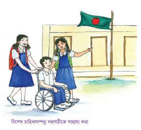

অধ্যায় ২
সমাজে পরস্পরের সহযোগিতা
১। নারী ও পুরুষ
পরিবারে আমরা সবাই মিলেমিশে শান্তিতে বসবাস করি। মা-বাবা ও ভাই-বোন নিয়ে আমাদের পরিবার। কোনো কোনো পরিবারে দাদা-দাদী ও অন্যান্য আত্মীয় পরিজন থাকেন। আমরা যেমন, আমাদের মা-বাবাকে শ্রদ্ধা করি, তেমনি তাঁরাও তাদের পিতা-মাতাকে শ্রদ্ধা করেন ও ভালোবাসেন।
একটি পরিবারে মেয়ে ও ছেলে শিশু সবাই সমান। সবারই শিক্ষা গ্রহণ করার অধিকার আছে। পরিবারের বিভিন্ন কাজে ছেলে-মেয়ে সকলেরই অংশগ্রহণ করা প্রয়োজন।
বর্তমান সময়ে নারী ও পুরুষ সবাই ঘরে ও বাইরে কাজ করেন। সবখানেই নারী ও পুরুষকে সমান চোখে দেখা উচিত। নারী ও পুরুষ উভয়ের সব ধরনের কাজ করার যোগ্যতা রয়েছে।
আমাদের দেশের মোট জনসংখ্যার প্রায় অর্ধেক নারী ও অর্ধেক পুরুষ। দেশের উন্নয়নে নারী ও পুরুষের সমান অবদান রয়েছে। কাজেই নারী ও পুরুষের মাঝে কোনো বৈষম্য করা উচিত নয়।
৭ক । এসো বলি
শিক্ষকের সহায়তা য় শ্রেণিতে আলোচনা কর :
-
সকল পরিবারে ছেলে ও মেয়ে শিশুকে কি একই সুযোগ সুবিধা দেওয়া হয়?
-
শিক্ষাক্ষেত্রে কি ছেলে ও মেয়েদের সমান সুযোগ আছে?
-
সকল ক্ষেত্রে মেয়ে ও ছেলে শিশুকে সমান সুযোগ দেওয়া উচিত কেন?
খ । এসো লিখি
নিচের টেবিলে প্রথম কলামে এমন কয়েকটি কাজের নাম লেখ যে কাজগুলো শুধু পুরুষদের করতে দেখা যায়। দ্বিতীয় কলামে কয়েকটি কাজের নাম লেখ যে কাজগুলো নারী ও পুরুষ দুজনকেই করতে দেখা যায়। তৃতীয় কলামে নারীরা সাধারণত যে কাজগুলোতে অংশ নেন সে কাজগুলোর নাম লেখ। কাজটি জোড়ায় কর।
|
পুরুষ |
নারী ও পুরুষ |
নারী |
|
- |
- |
- |
|
- |
- |
- |
|
- |
- |
- |
|
- |
- |
- |
গ । আরও কিছু করি
পরিবারের একটি মজার বিষয় নিয়ে আলোচনা কর। নিজেদের মধ্যে কয়েকটি বিষয় তুলনা করে দেখ। ছেলে ও মেয়েরা কি একটি ধরনের খেলনা দিয়ে খেলে? তারা কী একই বিষয় নিয়ে আগ্রহ প্রকাশ করে? একই রকম ও আলাদা বিষয়গুলো নিয়ে একটি তালিকা তৈরি কর।
ঘ । যাচাই করি
উপযুক্ত শব্দ দিয়ে বাক্যটি সম্পূর্ণ কর।
মানুষকে সমানভাবে না দেখাকে বলে …………………………….
৮২। সামাজিক বিভিন্নতা ও বিশেষ চাহিদাসম্পন্ন শিশু
আমরা বিভিন্ন সামাজিক অবস্থান থেকে এসেছি।
-
সকলের মাতৃভাষা এক নয়
-
কারও ধর্ম আলাদা
-
অনেকের মা-বাবার পেশা ভিন্ন
কেউ কেউ আছে যাদের পারিবারিক অবস্থার মধ্যে ভিন্নতা রয়েছে। যেমন অনেকে শিশু বয়সেই মা-বাবার সাথে আয়মূলক কাজ করে। আর এ কারণে অনেকে বিদ্যালয়ে আসতে পারে না।
শ্রেণিতে কারও পড়া শিখতে একটু বেশি সময় লাগে। কারণ তার:
-
চোখে সমস্যা থাকতে পারে।
-
শোনার সমস্যা থাকতে পারে।
-
কোনো শারীরিক অসুবিধা থাকতে পারে।
-
কেউ মানসিকভাবে বিশেষ চাহিদাসম্পন্ন হতে পারে।
যারা এই ধরেনের সমস্যায় ভোগে তাদের জন্য আমরা কী করতে পারি? আমাদের মনে রাখতে হবে, যেকোনো শিশুরই এই ধরনের সমস্যা থাকতে পারে। কাজেই তাদের বিদ্যালয়ে আসতে উৎসাহিত করতে হবে। তাদের মনে কষ্ট দেওয়া আমাদের উচিত নয়। তাদের জীবন কীভাবে সহজ করা যায় তা আমাদের ভাবতে হবে। প্রয়োজনে আমরা সবাই সবার পাশে দাঁড়াব এবং সহযোগিতা করব।

ক । এসো বলি
সামাজিক বৈচিত্র্য নিয়ে শিক্ষকের সহায়তায় শ্রেণিতে আলোচনা কর।
-
বৈচিত্র্যের ফলে আমাদের সমাজ কীভাবে সমৃদ্ধ হয়?
-
বিদ্যালয় /শ্রেণিকক্ষে কী কী ধরনের চাহিদার শিশু থাকতে পারে?
খ । এসো লিখি
শ্রেণিতে শিক্ষার্থীরা কী ধরনের সমস্যার সম্মুখীন হতে পারে এবং কীভাবে তাদের সহায়তা প্রদান করা যায় তা নিচের ছকে লেখ। কাজটি জোড়ায় কর :
|
সমস্যা |
আমরা কীভাবে সাহায্য করতে পারি |
গ । আরও কিছু করি
প্রতিদিন অন্যের জন্য একটি ভালো কাজ করার চেষ্টা কর। তারপর প্রতিদিনের সেই ভালো কাজগুলো ডায়রিতে লিখে রাখ।
ঘ । যাচাই করি
বামপাশের সাথে ডানপাশের বাক্যাংশের মিল কর:
| বামপাশ ক. আমরা যদি কাউকে খারাপ কথা বলি খ. যার বাংলা বুঝতে সমস্যা হয় গ. যার-হাঁটা চলায় সমস্যা আছে ঘ. আমাদের কোনো সহপাঠীর যদি দেখার বা শোনার সমস্যা থাকে | ডানপাশ তাদের চলাচলে সাহায্য করব। তাদের শ্রেণিতে সামনে বসতে দেব। তারা কষ্ট পাবে। তাদের ভাষা বুঝতে সাহায্য করব। |